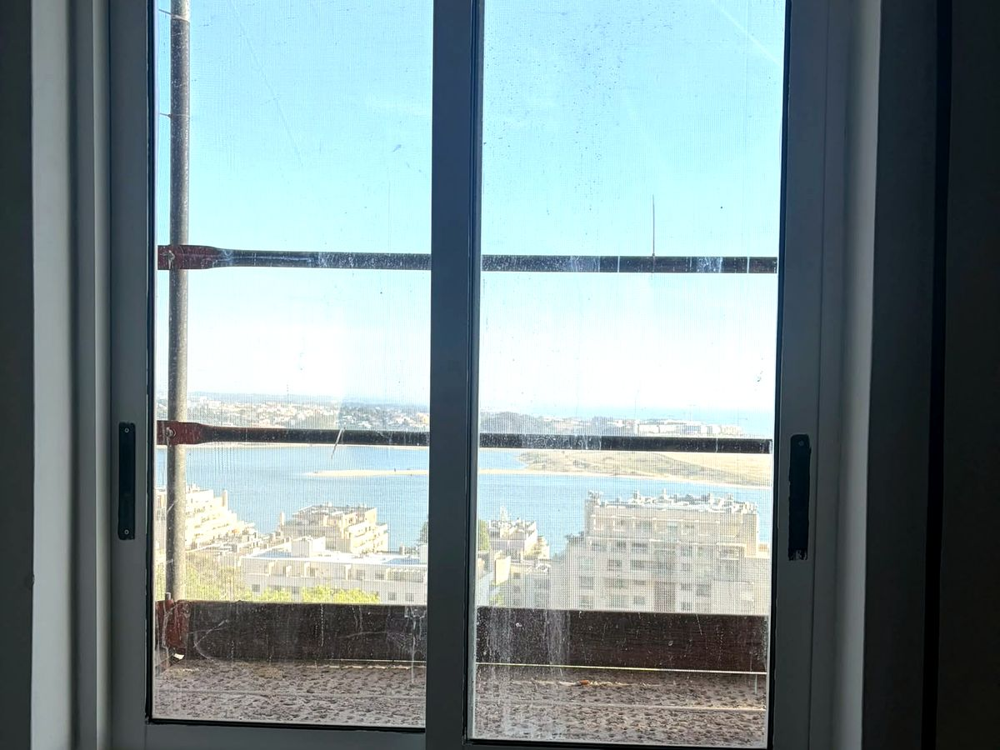
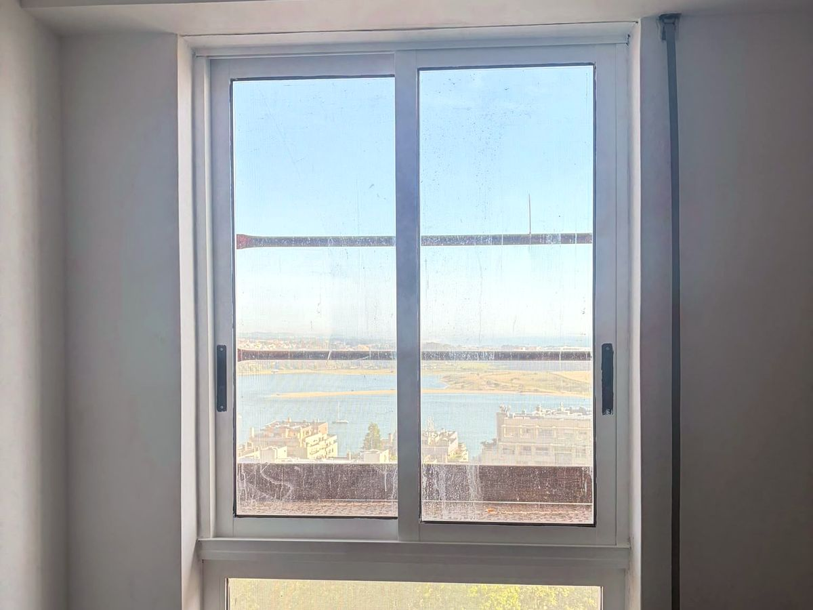
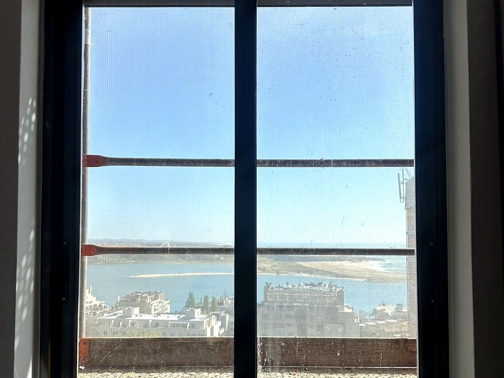
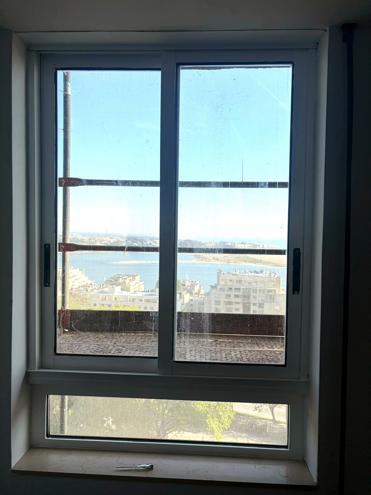

Janelas pintadas de castanho para branco
As janelas eram castanhas e foram pintadas de branco, a condizer com o interior.

O desafio
Janelas de madeira castanha a destoar do interior claro.
A nossa solução
Lixámos e preparámos a caixilharia e pintámo-la de branco.
O resultado
Janelas brancas a condizer com o interior, sem trocar a caixilharia.
Destaques
- Lixagem e preparação
- Pintura branca
- Sem trocar as janelas
Antes & depois


